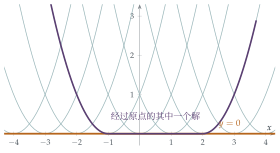

STEP III 1994，第 4 题
继续之前，请先阅读题目（原题为英文）。题目载于 STEP Support Programme 的题目资料库： step.maths.org/questions/94-s3-q4
引子
微分方程（differential equation）是一条告诉你某个量如何变化的规则：牛顿（Newton）定律告诉行星，在知道自己目前位置的情况下该如何运动。古典物理学的图像是，这样就已足够：只要知道世界此刻的状态，定律便决定了它的整个未来。拉普拉斯（Pierre-Simon Laplace）曾设想有这样一个智者，只要知道每一个位置和速度，便能预测一切。这幅图像建基于一个数学假设：一条微分方程加上一个初始条件（starting condition），恰好只有一个解。
这道题说明这个假设可以不成立。看似平平无奇的方程 \((y')^2 = 4y\)，有些解会沿着 \(x\) 轴走，然后在自己选定的一刻离轴而去。经过某些点的解有无限多个。知道现在，并不能决定未来。找出唯一性（uniqueness）究竟在甚么时候成立，是大学微分方程课程中最先遇到的定理之一。
动笔之前
把两边开平方：\(y' = \pm2\sqrt{y}\)。试试 \(y = (x - c)^2\)。它满足这条方程吗？有没有更简单的解？
若 \(y = (x - c)^2\)，则 \(y' = 2(x - c)\)，而 \((y')^2 = 4(x - c)^2 = 4y\)。所以对每一个 \(x\)，每一条抛物线（parabola）\(y = (x - c)^2\) 都是解。而 \(y = 0\) 也是解：\((0)^2 = 4 \times 0\)。请记住最后这一个解；它是整道题的关键。
逐步解题
阶段 1 经过一点的解
哪些抛物线 \(y = (x - c)^2\) 经过 \((a, b^2)\)？
我们需要 \((a - c)^2 = b^2\)，所以 \(a - c = \pm b\)，即 \(c = a - b\) 或 \(c = a + b\)。由于 \(b \neq 0\)，这两个值并不相同，于是得出两个解 \[y = (x - a + b)^2 \qquad\text{及}\qquad y = (x - a - b)^2. \qed\] （我们还应该检查有没有遗漏：在 \(y > 0\) 的区域上，\(y' = \pm2\sqrt{y}\) 而正负号固定，并且 \(\frac{\mathrm{d}}{\mathrm{d}x}\sqrt y = \frac{y'}{2\sqrt y} = \pm1\)，所以 \(\sqrt y = \pm(x - c)\)，得出的正是这些抛物线。因此在给定的点附近，只要 \(y\) 保持为正，就只有这两个解。不过，解一旦到达 \(x\) 轴，便可以与零解黏合起来，我们将在第 3 阶段看到这一点，而这样会多出无限多个对所有 \(x\) 都有定义的解。题目所说的“两个解”，就是这两条抛物线。）
阶段 2 两个点与一个共同的解
经过原点的解必定是 \(y = x^2\)（即 \(c = 0\) 的那条抛物线）。它在 \(x = 1\) 和 \(x = -1\) 处达到高度 \(1\)。所以取 \((a_1, 1) = (1, 1)\) 和 \((a_2, 1) = (-1, 1)\)。
经过 \((1, 1)\)（即 \(a = 1\)，\(b = \pm1\)）的解是 \(y = x^2\) 和 \(y = (x - 2)^2\)。经过 \((-1, 1)\) 的解是 \(y = (x + 2)^2\) 和 \(y = x^2\)。两种情况下，经过原点的解都是同一条曲线 \(y = x^2\)。■
阶段 3 整个曲线族与一条公切线
就不同的 \(c\) 值，画出几条抛物线 \(y = (x - c)^2\) 的草图。哪一条直线与它们每一条都相切？这条直线本身是不是解？
每一条抛物线 \(y = (x - c)^2\) 都在其顶点 \((c, 0)\) 与 \(x\) 轴相切，所以 \(x\) 轴是整个曲线族的公切线（common tangent），亦即它们的包络线（envelope）（图 8.1.1）。而 \(x\) 轴，即 \(y = 0\)，本身也是这条微分方程的解。它不是那些抛物线的其中一条；它是另外一个独立的解，称为奇解（singular solution）。
阶段 4 为何重要
从原点出发。哪些解经过原点？你能否构造一个解，先沿着 \(x\) 轴走一段，然后离开？
经过原点的有 \(y = x^2\) 和 \(y = 0\)。但事实远不止于此。由于每条抛物线都与 \(x\) 轴相切（两者在该处的斜率都是 \(0\)），你可以把各段平滑地黏合起来：对任意 \(c_1 \leq 0 \leq c_2\)， \[y = \begin{cases} (x - c_1)^2 & x < c_1, \\ 0 & c_1 \leq x \leq c_2, \\ (x - c_2)^2 & x > c_2 \end{cases}\] 是一个可微函数（differentiable function），处处满足 \((y')^2 = 4y\)，并且经过原点。经过 \(x\) 轴上每一点的解都有无限多个：一个解可以随意在 \(y = 0\) 上停留多久，然后才离开。这条公切线正正就是唯一性失效的地方。■

回顾
先找简单的解。试一试 \(y = (x - c)^2\) 和 \(y = 0\)，便看清了整个局面。
包络线给出奇解。一族解的公切线，本身可以是一个不属于该族的解。
黏合。两个解相切之处，可以把它们接合成一个新的可微解。非唯一性就是这样蔓延开去的。
背后的数学
皮卡–林德洛夫定理（Picard–Lindelöf theorem，由皮卡（Émile Picard）和林德洛夫（Ernst Lindelöf）约于 1890–1894 年证明）指出，方程 \(y' = F(x, y)\) 连同 \(y(x_0) = y_0\) 在 \(x_0\) 附近恰好有一个解，条件是 \(F\) 对 \(y\) 满足利普希茨（Lipschitz）条件：存在常数 \(L\) 使得 \(|F(x, y_1) - F(x, y_2)| \leq L|y_1 - y_2|\)。粗略地说，当 \(y\) 变化时，\(F\) 不可以变化得无限快。我们的方程是 \(y' = \pm2\sqrt y\)，而 \(\sqrt y\) 在 \(y = 0\) 处的斜率是无限大：它在该处不满足利普希茨条件，而那里正是唯一性失效的地方。（皮亚诺（Giuseppe Peano）在 1886 年证明了单凭 \(F\) 的连续性（continuity）已能保证解存在，但不能保证解唯一。）皮卡–林德洛夫定理的证明用到一个迭代（iteration），它凭借 第 2.2 节 的压缩映射原理（contraction mapping principle）而收敛。
漏水的水桶
以下是一个物理例子。一个底部有孔的水桶按照托里拆利定律（Torricelli’s law）流干：水的高度 \(h\) 满足 \(h' = -k\sqrt h\)。让时间向前走，一切都没有问题：水桶流干，然后一直是空的。但让时间倒流：假如你发现一个空桶，这条方程无法告诉你它是甚么时候流干的。在所有时间都有 \(h = 0\) 的解，以及那些直到某一刻仍然盛满、然后才流干的解，全都与“现在是空的”相符。这种非唯一性，正是“关于过去的信息已经失去”这个事实在数学上的投影。
Norton 圆顶
2003 年，哲学家 John Norton 描述了一个无摩擦的圆顶，其形状使得一个恰好放在顶端的球所遵从的牛顿定律，形式为 \(r'' = \sqrt r\)。其中一个解是球永远停在顶端。但还有其他的解：球在顶端停留任意长的时间，然后在没有任何原因的情况下，自发地朝任意方向滚下。这个例子至今仍有争论：古典力学到底是否决定论（deterministic）的？从数学上看，这正是本题所见的那种非唯一性。
思维技巧
找到一个解，并不表示它是唯一的解。要问一问是否还有其他解，尤其是当方程涉及不光滑的函数时。
在大学里，存在性与唯一性定理（existence and uniqueness theorems）会确切地告诉你需要甚么条件。在这里，一个在零处斜率无限大的平方根，已足以破坏唯一性。
延伸练习
两种增长率。试做 STEP II 2018，第 8 题。该题用代换法（substitution）解两条增长方程。然后想一想，为甚么 \(y = 0\) 也是具有相同初始值的解，而这对唯一性又说明了甚么。
漏水的水桶。解 \(h' = -k\sqrt h\)，其中 \(h(0) = h_0 > 0\)。水桶在甚么时候变空？写出两个不同的解，使得对某个 \(T\) 有 \(h(T) = 0\)，并且对所有 \(t \geq T\) 有 \(h(t) = 0\)。
恢复唯一性。证明 \(y' = 2y\) 连同 \(y(0) = 0\) 只有 \(y = 0\) 这一个解。（提示：考虑 \(\frac{\mathrm{d}}{\mathrm{d}x}(ye^{-2x})\)。）\(2y\) 具有甚么性质，是 \(2\sqrt y\) 所没有的？
立方。求 \(y' = 3y^{2/3}\) 经过原点的所有解。
延伸阅读
Morris Hirsch, Stephen Smale & Robert Devaney, Differential Equations, Dynamical Systems, and an Introduction to Chaos（Academic Press）。讲述存在性与唯一性，以及本章其余的大部分内容。
George Simmons, Differential Equations with Applications and Historical Notes（CRC Press）。一本经典著作，富于历史掌故；书中讨论了奇解与包络线。
John Norton, “The dome: an unexpectedly simple failure of determinism”，Philosophy of Science 75 (2008)。篇幅短小，容易阅读。